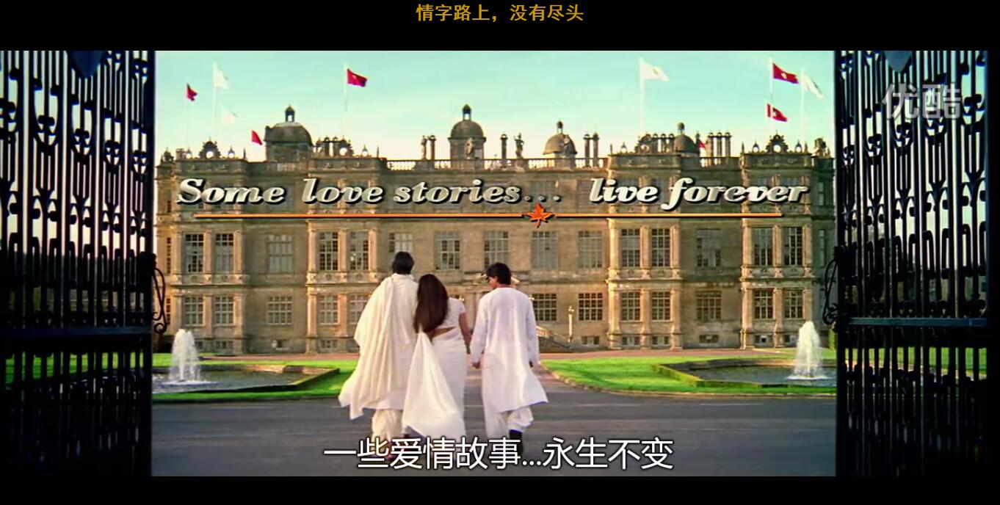

今天看了一部电影，第一次看这部电影的时候，是几年前的时候了，太多的话都无以表达，直接推荐：
经典台词：
生活就是对爱的给予与接受，不再有其它
世界上有这么多的仇恨，即使如此，心灵还是充满爱的，勇往直前，去告诉全世界吧，没有人可以阻止故事的发生。

有很多的触点，如：一个人爱你就应该爱你真实的一面，而不是她要求你的一面，……如果她要改变你，这不是爱，而是对你的伤害……
如果注定 我们会见面 否则就不会。觉得我个人就是这种性格的人。
还有一点：爱情就像生活 它并不总是一帆风顺的 它也不总是带来快乐 可既然我们不停止生活为什么却要停止爱。尽管我们有时候会受到伤害，会悲伤，会寂寞。